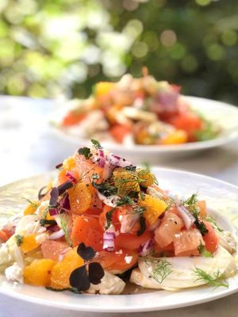
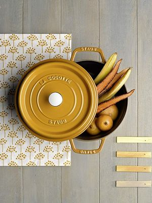
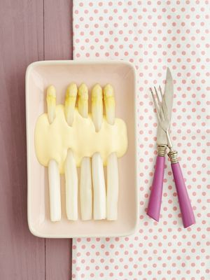
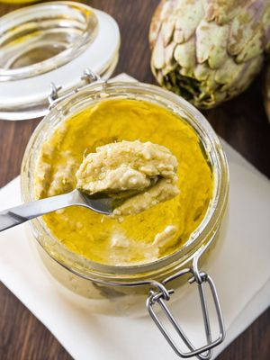
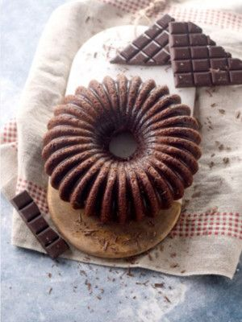

Je cherche une recette, un
ingrédient, de l'aide...
Connexion
Trouver une recette, une idée, une vidéo...
Parmi 73 586 recettes, 4 101 vidéos, 36 418 discussions
Par ingrédientsRecherche ++

Salade de carottes croquantes, oranges, et pesto de
fanes de carottes de CaleighRecette du jourRetrouvez les recettes de nos LIVE Facebook
#ensembleencuisine du lundi au vendredi à 11h30

Le guide complet des meilleures cocottes !En ce moment

Asperges blanches, crème à la ciboulette

Caviar d'artichaut

Nos recettes à réaliser avec les enfants pour les
occuper durant le confinement